화재감식평가기사 (2022-03-05 기출문제)
1과목: 화재조사론
1. 화재조사 및 보고규정상 명시된 화재조사본부장의 책임을 모두 고른 것은?
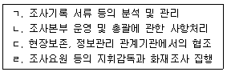
- ㄱ, ㄴ, ㄷ
- ㄱ, ㄴ, ㄹ
- ㄴ, ㄷ, ㄹ
- ㄱ, ㄴ, ㄷ, ㄹ
(정답률: 85%)
2. 화재조사 시 조사관이 분석한 데이터를 토대로 화재확산, 발화점의 규명, 화재 원인 등에 대한 가설을 만들어 내는 과정은?
- 주관적 추론
- 연역적 추론
- 귀납적 추론
- 객관적 추론
(정답률: 40%)

3. 폴리우레탄폼 벽체를 관통하는 단위면적당 열유동률은 약 몇 W/m2인가? (단, 폴리우레탄폼의 열전도율은 0.034W/mㆍK이며, 벽의 두께는 0.⑤m, 벽 양면의 온도는 각각 50℃와 20℃이다.)
- 15.3
- 20.4
- 24.5
- 28.9
(정답률: 47%)
4. 화재 플럼(Fire Plume)에 의해 수직벽면에 생성되는 패턴이 아닌 것은?
- V 패턴
- U 패턴
- 모래시계 패턴
- 레인보우 이펙트 패턴(Rainbow Effect Patterm)
(정답률: 59%)
5. 물질의 환원반응에 관한 설명 중 틀린 것은?
- 산소를 잃는 반응이다.
- 전자를 얻는 반응이다.
- 수소와 결합하는 반응이다.
- 산화수가 증가하는 반응이다.
(정답률: 73%)
6. 화재현장에서 조사자의 자세로 틀린 것은?
- 개인의 민사관계에 적극 관여하여야 한다.
- 부당하게 개인의 권리를 침해하고 자유를 제한하지 않도록 한다.
- 기술적으로 타당성에 입각하여 조사하여야 한다.
- 화재조사는 물적 증거를 객체로 하여 과학적 방법으로 합리적으로 사실을 규명하여야 한다.
(정답률: 80%)
7. 소방기본법령상 화재조사의 책임과 권한에 관한 사항으로 옳은 것은?
- 소방청장, 소방본부장 또는 소방서장은 화재조사를 위하여 관계인에게 자료 제출을 명할 수 없다.
- 소방청장, 소방본부장 또는 소방서장은 수사기관이 방화(放火)의 혐의가 있어서 이미 피의자를 체포하였을 때에 그 피의자에 대하여 조사할 수 없다.
- 화재조사를 하는 관계 공무원은 화재조사를 수행하면서 알게 된 비밀을 언론에 알려야 한다.
- 소방본부장이나 소방서장은 화재조사 결과 방화 또는 실화의 혐의가 있다고 인정하면 지체 없이 관할 경찰서장에게 그 사실을 알려야 한다.
(정답률: 72%)
8. 가정용 LPG 보일러 배관에서 LPG가 누출되어 폭발이 발생하였다. 발화원인으로서 화재의 4요소 중 가장 집중해서 조사하여야 하는 것은?
- 점화원
- 가연물
- 산소 농도
- 자립연쇄반응
(정답률: 20%)
9. 구획실 화재 현상에 관한 설명 중 틀린 것은?
- 플레임오버나 롤오버는 플래시오버에 선행하는 것이 일반적이다.
- 플레임오버나 롤오버 이후에는 반드시 플래시오버가 일어난다.
- 화재가 성장하면서 복사열이 화재를 지배하게 한다.
- 환기지배형화재의 경우에는 고온 가스층에 미연소 열분해물과 일산화탄소의 수치가 증가한다.
(정답률: 75%)
10. 목재의 탄화모양과 형상에 대한 설명 중 틀린 것은?
- 탄화된 골은 폭이 좁고 얕다.
- 표면은 요철부가 많고 거칠어진다.
- 표면이 박리와 회화(恢化)를 반복한다.
- 연소가 계속되면 타서 가늘게 되고 박리되어 소실되어 간다.
(정답률: 73%)
11. 발화붑 주변의 일반적인 연소현상에 대한 설명 중 틀린 것은?
- 발화부를 향해 소락(燒落)되거나 도괴된다.
- 발화부와 가까울수록 탄화심도가 깊다.
- 목재표면에 발생하는 균열은 발화부와 가까울수록 골이 넓고 굵어진다.
- 발화부는 비교적 밝은 색을 띠며 발화부와 멀어질수록 어두운 빛을 나타낸다.
(정답률: 70%)
12. 얇은 고체 가연물에서 정방향 화염확산에 관한 설명 중 틀린 것은?
- 얇은 고체가연물에서의 정방향 화염 확산은 위로 퍼지는 화염 확산에서 발생한다.
- 커튼 위로 화염이 퍼지거나 종이 위로 화염이 퍼지는 것이 대표적인 예이다.
- 화염확산 속도가 역방향 화염 확산보다 느리기 때문에 가연물이 활발하게 타는 지역이 매우 짧다.
- 얇은 고체가연물은 빨리 발화되지만 빨리 연소되기 때문에 가연물 두께에 따른 화염 확산 속도의 변화 추이를 만드는 것이 불가능하다.
(정답률: 65%)
13. 소방기본법령상 소방본부의 화재조사전담부서에서 갖추어야 할 감식ㆍ감정용 기기를 모두 고른 것은? (단, 거점소방서를 포함한다.)
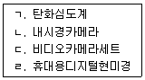
- ㄱ, ㄴ, ㄷ
- ㄱ, ㄴ, ㄹ
- ㄱ, ㄷ, ㄹ
- ㄴ, ㄷ, ㄹ
(정답률: 37%)
14. 가연물의 최소착화에너지에 영향을 미치는 요인에 대한 설명으로 옳은 것은?
- 압력이 높을수록 최소착화에너지는 높아진다.
- 온도가 높을수록 최소착화에너지는 낮아진다.
- 가연물의 종류에 관계없이 최소착화 에너지는 일정하다.
- 혼합된 공기의 산소농도에 관계없이 최소 착화에너지는 일정하다.
(정답률: 70%)
15. 금속의 용융점이 낮은 것에서 높은 것 순으로 옳게 나열된 것은?
- ㉡→㉢→㉠→㉣
- ㉡→㉢→㉣→㉠
- ㉢→㉡→㉠→㉣
- ㉢→㉡→㉣→㉠
(정답률: 59%)
16. 화재현장에서 발견된 유리의 파괴선에 관한 설명 중 틀린 것은?
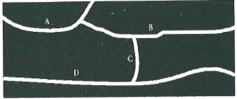
- A는 B보다 선행되었다.
- B는 C보다 선행되었다.
- C는 D보다 선행되었다.
- D와 B의 선후관계는 알 수 없다.
(정답률: 42%)
17. 메탄의 연소범위로 옳은 것은?
- 4.0~75 vol%
- 5.0~15 vol%
- 2.1~9.5 vol%
- 6.7~36vol%
(정답률: 50%)
18. 인화성 액체 가연물의 연소에 의한 화재패턴이 아닌 것은?
- 제트패턴(Z Pattern)
- 포어패턴(Pour Pattern)
- 도넛패턴(Doughnut Pattern)
- 고스트마크패턴(Ghost Mark Pattern)
(정답률: 77%)
19. 소방기본법령상 화재원인조사 조사범위에 해당하는 것을 모두 고른 것은?
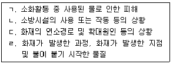
- ㄱ, ㄴ, ㄷ
- ㄱ, ㄴ, ㄹ
- ㄱ, ㄷ, ㄹ
- ㄴ, ㄷ, ㄹ
(정답률: 79%)
20. BLEVE 현상에 대한 설명으로 옳은 것은?
- 압력유, 윤활유 등 유기물이 공기중에 분무된 상태에서 폭발하는 현상
- 저장탱크에서 유출된 대향의 가연성가스가 대기중에 떠다니다가 점화원와 접촉시 폭발하는 현상
- 혼합가스가 폭발범위에서 점화될 때 음속보다 빠른 연소속도로 이동하며 충격파를 수반하는 현상
- 가스저장탱크 주변화재시 저장탱크가 가열되어 탱크 내의 액화가스가 급격히 증발 팽창하여 탱크가 폭발하는 현상
(정답률: 75%)
2과목: 화재감식론
21. 차량의 점화장치의 전류 흐름 순서를 바르게 나열한 것은?
- 점화스위치→배터리→시동모터→점화코일→배전기→고압케이블→스파크 플러그
- 점화스위치→시동모터→배터리→점화코일→배전기→고압케이블→스파크 플러그
- 점화스위치→배터리→시동모터→배전기→점화코일→고압케이블→스파크 플러그
- 점화스위치→시동모터→점화코일→배터리→배전기→고압케이블→스파크 플러그
(정답률: 73%)
22. 항공기 객실 내에서의 연기로 인한 이온밀도에 변화를 감지하는 연기감지기(Smoke detector)는?
- 열감지기
- 불꽃감지기
- 이온화감지기
- 광전식감지기
(정답률: 80%)
23. 화재조사 및 보고규정상 발화원인 판정에서 서술되는 용어의 정의 중 틀린 것은?
- 발화란 열원에 의하여 가연물질에 지속적으로 불이 붙는 현상을 말한다.
- 발화열원이란 발화의 최초원인이 된 불꽃 또는 열을 말한다.
- 발화요인이란 발화열원에 의하여 발화로 이어진 연소현상에 영향을 준 물적요인만을 말한다.
- 최초착화물이란 발화열원에 의해 불이 붙고 이 물질을 통해 제어하기 힘든 화세로 발전한 가연물을 말한다.
(정답률: 70%)
24. 화재현장에 노출된 금속의 표면에 화재열에 의하여 나타나는 현상이 아닌 것은?
- 변색
- 분해
- 만곡
- 용융
(정답률: 73%)
25. 임야화재 중 수관화에 관한 설명으로 틀린 것은?
- 땅속에 있는 연료가 타는 것을 말한다.
- 중심부 화염의 온도가 1175℃ 정도이다.
- 바람을 타고 바람이 부는 방향으로 V자형으로 퍼진다.
- 빨리 확산되고 짧은 기간에 심각한 피해를 발생시킨다.
(정답률: 67%)
26. 담뱃불로 인하여 화재가 발생한 현장의 주요 감식요령 중 틀린 것은?
- 발화에 충분한 축열조건 입증
- 착화지점이 얕게 타들어간 흔적 입증
- 착화, 발염에 이르기까지의 경과시간과 착화물과의 관계의 타당성 입증
- 담뱃불에 의해 착화될 수 있는 가연물의 존재 여부 입증
(정답률: 46%)
27. 용기 내용적이 5m3이고, 35℃에서 최고 충전압력이 4MPa인 압축가스용기의 최대저장능력(m3)은?
- 10
- 20
- 25
- 30
(정답률: 17%)
28. 화학적 폭발 이후에 화재로 진행되는 경우, 가연물과 공기의 혼합비율이 화재에 미치는 영향에 관한 설명으로 옳은 것은?
- 연소상한계에 가까울수록 폭발 후 화재로 발전될 가능성이 높다.
- 연소하한계에 가까울수록 폭발 후 화재로 발전될 가능성이 높다.
- 연소 한계 범위 내에서는 혼합비율에 관계없이 화재로 발전가능성은 모두 같다.
- 연소범위 내에서 화학양론비에 가까울수록 화재로 발전될 가능성이 높다.
(정답률: 25%)
29. 저항 1Ω과 유도리액턴스 1Ω의 직렬회로에 교류전압 ｕ(t)=100√2sin(wt)V를 인가하였을 때 이 회로에 흐르는 전류 i(t)는 몇 A인가?
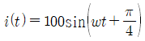
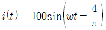
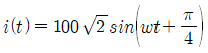
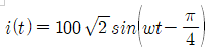
(정답률: 42%)
30. 화재현장에서 발생하는 소음으로서 목격자들이 폭발로 오인할 수 있는 경우가 아닌 것은?
- 화재 시 콘크리트 폭렬에 의한 소음
- 개방된 용기의 변형 시 발생하는 소음
- 화재 열기에 의한 스프레이 캔, 방향제 캔 등의 파열 소음
- 화재 시 전선피복이 손상되면서 발생하는 전기적 합선의 소음
(정답률: 84%)
31. 전기적 발화원인 중 근본적인 원인이 국부적 저항증가인 것은?
- 누전
- 과전류
- 합선
- 불완전접촉
(정답률: 9%)
32. 유염화원에 관한 사항 중 틀린 것은?
- 미소화원에 비하여 훨씬 에너지량이 많다.
- 라이터불, 성냥불, 촛불과 같이 화염이 있는 화염이다.
- 오랜 시간동안 연소가 진행되고 깊게 탄 연소흔적을 보이며 표면적으로 연소가 확대되는 경우는 드물다.
- 무염화원에 대한 소화되기 전까지 불이 붙어 있거나 보통 소화되기 전까지 화염을 발하여 연소를 계속하고 있는 화원의 총칭이다.
(정답률: 80%)
33. 그림과 같은 초기 임야화재의 확산형태에 관한 설명으로 옳은 것은? (단, 그림 안의 X는 최초발화지점을 나타낸다.)
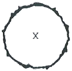
- 평지에서 무풍 상태일 때의 모습이다.
- 경사로에서 매우 강한 바람이 불 때의 모습이다.
- 양쪽으로 경사가 있는 계곡에서 발생한 화재의 모습이다.
- 다양한 방향과 풍속의 바람이 불어올 때의 모습이다.
(정답률: 75%)
34. 고압가스안전관리법령상 가연성가스 종류에 따른 용기의 도색구분으로 옳은 것은?
- LPG - 백색
- 수소 - 주황색
- 아세틸렌 - 녹색
- 액화암모니라 - 회색
(정답률: 64%)
35. 산화에틸렌 90vol%와 메탄 10vol%가 혼합되어 있는 경우 폭발하한계 값(vol%)은?
- 3.13
- 15.79
- 32.50
- 55.81
(정답률: 37%)
36. 화재조사 및 보고규정상 항공기 화재의 소실정도에 관한 내용 중 틀린 것은?
- 항공기의 50%가 소실된 경우 반소로 본다.
- 항공기의 70%이상 소실된 경우 전소로 본다.
- 항공기의 소실정도는 전소와 반소로만 구분한다.
- 항공기의 60%가 소실되었으나 잔존부분을 보수하여도 재사용이 불가능한 것은 전소로 본다.
(정답률: 54%)
37. 다음 흔적 중 전기기기 내부의 통전 입증이 가능한 증거가 아닌 것은?
- 전류 퓨즈의 용단
- 기판의 전체적인 탄화
- 내부 배선의 합선흔적
- 내부 단자의 부분적 용융흔적
(정답률: 50%)
38. 차량화재 조사 시 유의사항으로 옳은 것은?
- 화재차량을 위주로만 세밀하게 조사한다.
- 차량 조사를 위해 차량을 함부로 이동 시킨다.
- 명확한 원인 조사를 위해 주변을 깨끗하게 정리 및 청소한다.
- 차량 주변의 수거 가능한 모든 증거물을 모아두고, 작은 것도 소홀히 취급해서는 안된다.
(정답률: 82%)
39. 방화범을 정신분석적 측면에서 분류할 때 다음 방화범의 유형은?
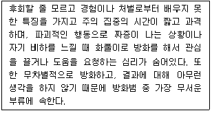
- 잠복기 방화범
- 구강기 방화범
- 항문기 방화범
- 외음부기 방화범
(정답률: 34%)
40. 방화형태의 이론에서 연쇄방화의 주요 조사 착안점 중 틀린 것은?
- 행적 조사
- 연고감(緣故感)조사
- 피해액 조사
- 지리감(地理感)조사
(정답률: 82%)
3과목: 증거물관리 및 법과학
41. 화재증거물수집관리규칙상 화재현장 사진 및 비디오 촬영 시 유의사항 중 틀린 것은?
- 증거물을 촬영할 때는 그 소재와 상태가 명백히 나타나도록 하며 구분이 용이하도록 반드시 번호표 등을 넣어 촬영한다.
- 화재와 연관성이 크다고 판단되는 증거물, 피해물품, 유류 등의 대상물은 형상을 면밀히 관찰 후 자세히 촬영한다.
- 현장사진 및 비디오 촬영과 현장기록물 확보 시에는 연소확대 경로 및 증거물 기록에 대한 번호표와 화살표 등을 활용하여 작성한다.
- 화재현장의 특정한 증거물 등을 촬영할 때 그 길이, 폭 등을 명백히 하기 위하여 측정용 자 또는 대조도구를 사용하여 촬영한다.
(정답률: 50%)
42. 냉온수기의 자동온도 조절장치에서 절연체의 오염에 의한 트래킹 화재가 발생한 경우 감정해야 할 증거물로 옳은 것은?
- 응축기
- 압축기
- 서모스탯
- 과부하 계전기
(정답률: 73%)
43. 화재조사를 위한 질문 및 녹음에 관한 설명으로 옳은 것은?
- 경험이 많은 화재조사자의 직감에 의존하여 질문을 한다.
- 허위진술과 같은 불가피한 상황은 어느정도 인정하고 받아들어야 한다.
- 녹취가 필요한 경우 피질문자의 동의가 필요하다.
- 청소년을 대상으로 하는 질문을 가급적이면 편안하고 조용한 장소에서 1대 1로 진행한다.
(정답률: 70%)
44. 화재증거물수집관리규칙상 입수한 증거물 이송을 위해 포장한 후 부착하여야 할 상세정보가 아닌 것은?
- 봉인자
- 수집일시
- 증거물 번호
- 증거물 포장용기 종류
(정답률: 62%)
45. 화재로 인해 사망한 시체에서 볼 수 있는 특징과 거리가 가장 먼 것은?
- 구강 개방
- 피부의 파열
- 권투선수자세
- 손과 발의 피부 장갑상 탈락
(정답률: 70%)
46. 화재현장 촬영 시 사용되는 카메라의 기능 중 노출 측정이 어렵거나 측정치가 정확하지 않을 때 노출을 여러 단계로 두는 것은?
- 다징(Dodging)
- 마젠타(Magenta)
- 비네팅(Vignetting)
- 브라케팅(Bracketing)
(정답률: 0%)
47. 액체나 고체 촉진제의 증거물을 수집할 때 잘못된 방법은?
- 일회용 비닐장갑을 끼고 수집한다.
- 보관용기 자체를 수집도구로 사용한다.
- 각 증거물에 대해 항상 새 장갑이나 새 봉지를 사용한다.
- 증거물을 수집할 때 증거물 수집 및 조사 기구를 휘발성 용매가 들어있는 클리너를 사용하여 수시로 닦아야 한다.
(정답률: 46%)
48. 인공증거물(Artifact Evidence)에 해당 하는 것을 모두 고른 것은?
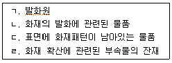
- ㄱ, ㄴ, ㄷ
- ㄱ, ㄷ, ㄹ
- ㄴ, ㄷ, ㄹ
- ㄱ, ㄴ, ㄷ, ㄹ
(정답률: 40%)
49. 화재증거물수집관리규칙상 증거물의 보관ㆍ이동에 관한 사항 중 틀린 것은?
- 증거물은 화재증거 수집의 목적달성 후에는 5년간 소방서장이 보관하여야 한다.
- 증거물의 보관 및 이동은 장소 및 방법, 책임자 등이 지정된 상태에서 행해져야 한다.
- 증거물의 보관은 전용실 또는 전용함 등 변형이나 파손될 우려가 없는 장소에 보관해야 한다.
- 증거물은 수집 단계부터 검사 및 감정이 완료되어 반환 또는 폐기되는 전 과정에 있어서 화재조사자 또는 이와 동일한 자격 및 권한을 가진 자의 책임 하에 행해져야 한다.
(정답률: 74%)
50. 전신적 생활반응이 아닌 것은?
- 색전증
- 피하출혈
- 속발성염증
- 전신적 빈혈
(정답률: 0%)
51. 화재현장의 촬영에 관한 설명 중 틀린 것은?
- 작은 물건을 촬영할 대에는 표식을 사용한다.
- 어두운 곳에서는 스트로보(Strobo)를 이용하여 촬영한다.
- 좁은 방에서는 광각렌즈보다 표준렌즈를 사용한다.
- 촬영의 목적을 분명하게 이해한 뒤 촬영에 임한다.
(정답률: 64%)
52. 화재현장에서 증거물 수집 시 증거물의 상태와 수집용기의 연결이 잘못된 것은?
- 비닐팩 - 액체
- 종이상자 - 고체
- 유리병 - 고체, 액체
- 금속캔 - 고체, 액체
(정답률: 77%)
53. 방화가 의심되는 화재현장의 물적 증거로 거리가 가장 먼 것은?
- 촉진제 용기
- 반단선 코드
- 타이머가 부착된 점화장치
- 인위적인 가스밸브의 절단흔적
(정답률: 84%)
54. 화재증거물수집관리규칙상 증거물 시료용기에 관한 설명 중 틀린 것은?
- 주석 도금 캔은 재사용이 용이하다.
- 주석 도금 캔은 사용직전에 검사하여야 하고 새거나 녹슨 경우 폐기한다.
- 양철 캔은 프레스를 한 이음매 또는 외부표면에 용매로 송진 용제를 사용하여 납땜을 한 이음매가 있어야 한다.
- 양철 캔은 기름에 견딜 수 있는 디스크를 가진 스크루 마개 또는 누르는 금속마개로 밀폐될 수 있으며, 이러한 마개는 한번 사용한 후에는 폐기되어야 한다.
(정답률: 82%)
55. 화재 진압 작업 시 증거물 보존을 위한 주의사항 중 틀린 것은?
- 소방 호스의 사용은 물리적 증거를 옮기거나 손상시킬 수 있으니 주의한다.
- 동력절단기 사용을 위한 연료주입은 화재현장에 안에서 실시한다.
- 잔불을 정리하거나 복원 작업을 할 때 증거를 불필요하게 훼손하지 않도록 한다.
- 화재 패턴이 남아 있을 가능성이 있어 화재조사관이 바닥을 살펴봐야 하는 경우 소화 시 화재 패턴에 최소한의 영향만 주도록 한다.
(정답률: 82%)
56. 사후강직에 대한 설명으로 옳은 것은?
- 사후강직은 형성 이후 계속 변화가 없다.
- 사후강직은 주변 온도에 영향을 받지 않는다.
- 사후강직은 사망 후 혈액이 침하되는 현상이다.
- 사망 직전의 급격한 근육활동은 사후강직의 시작을 빠르게 한다.
(정답률: 59%)
57. 개별적인 화재증거물들을 연관성 있는 정보끼리 연결하고 분석 및 재구성하여 지도를 그리듯 화재원인을 추론하는 과정은?
- 타임라인
- 마인드 맵
- 브레인스토밍
- PERT 차트
(정답률: 72%)
58. 화재증거물수집관리규칙상 증거물 수집에 관한 사항 중 틀린 것은?
- 현장 수거(채취)물은 그 목록을 작성하여야 한다.
- 증거물 수집 목적이 인화성 액체 성분 분석인 경우에는 인화성 액체 성분의 증발을 막기 위한 조치를 행하여야 한다.
- 증거물이 파손될 우려가 있는 경우에 취급방법에 대한 주의사항을 증거물에 직접 표기하여야 한다.
- 증거물 수집 과정에서는 증거물의 수집자, 수집 일자, 상황 등에 대하여 기록을 남겨야 하며, 기록은 가능한 법과학자용 표지 또는 태그를 사용하는 것을 원칙으로 한다.
(정답률: 50%)
59. 화재현장에서 채취한 증거물 분석 시 사용하는 가스크로마토그래피(GC)에 관한 사항 중 틀린 것은?
- 물질이 유사한 여러 성분의 혼합계 분리에 매우 유효하다.
- 화재현장에서 유류의 존재를 입증하기 위해 사용되는 분석방식이다.
- 가스 상태로 분석을 행하기 때문에 조작이 어렵고 많은 시간이 소요된다.
- 각 성분을 검출하여 그 양을 전기적인 신호로 기록계에 저장하여 분석 결과가 객관적으로 보존된다.
(정답률: 20%)
60. 화재현장에서 발견되는 증거물 중 유리에 대한 설명 중 틀린 것은?
- 파손형태에 따라 열에 의한 파손, 충격에 의한 파손, 폭발에 의한 파손 등을 구별할 수가 있다.
- 유리가 동심원 모양으로 파손된 경우 충격지점에 가까울수록 파편이 크고 멀수록 파편이 작다.
- 방사형 파단면의 리플마크를 관찰하면 내측의 충격에 의해 깨진 것인지 외측 충격에 의해 깨진 것인지 구분할 수 있다.
- 유리는 충격부위에서부터 주변으로 순차적인 동심원 형태의 파단이 되며 동심원 순서에 따라 안팎으로 번갈아 가며 장력을 받아 파손된다.
(정답률: 59%)
4과목: 화재조사보고 및 피해평가
61. 화재피해액 산정 시 가재도구의 소손 정도에 따른 손해율로 ()에 알맞은 기준은?
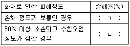
- ㄱ : 10, ㄴ : 50
- ㄱ : 10, ㄴ : 100
- ㄱ : 30, ㄴ : 50
- ㄱ : 30, ㄴ : 100
(정답률: 55%)
62. 화재조사 및 보고규정상 변전소에서 발생한 화재의 조사 결과 보고 기한으로 ()에 알맞은 기준은?
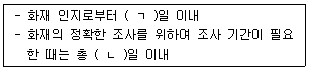
- ㄱ : 15, ㄴ : 50
- ㄱ : 15, ㄴ : 60
- ㄱ : 30, ㄴ : 50
- ㄱ : 30, ㄴ : 60
(정답률: 42%)
63. 화재조사 및 보고규정상 화재현장조사서 작성 시 화재원인 검토 항목이 아닌 것은? (단, 임야화재, 기타화재, 피해액이 없는 화재는 제외한다.)
- 조사결과
- 방화가능성
- 인적 부주의
- 전기적 요인
(정답률: 65%)
64. 건물에 포함하여 화재 피해액을 산정하는 것은?
- 칸막이
- 구축물
- 영업시설
- 부대설비
(정답률: 25%)
65. 화재조사 및 보고규정상 회화(그림), 골동품의 화재피해산정기준으로 옳은 것은?
- 전부손해의 경우 감정가격으로 한다.
- 전부손해의 경우 시중 매매가격으로 한다.
- 전부손해가 아닌 경우 감정가격으로 한다.
- 전부손해가 아닌 경우 시중 매매가격으로 한다.
(정답률: 79%)
66. 화재조사 및 보고규정상 사상자에 관한 사항으로 ()에 알맞은 기준은?
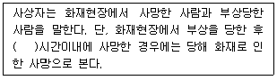
- 24시간
- 48시간
- 72시간
- 96시간
(정답률: 77%)
67. 화재조사 및 보고규정상 질문기록서를 생략할 수 있는 화재를 모두 고른 것은?
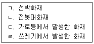
- ㄱ, ㄴ, ㄷ
- ㄱ, ㄴ, ㄹ
- ㄱ, ㄷ, ㄹ
- ㄴ, ㄷ, ㄹ
(정답률: 64%)
68. 화재조사 및 보고규정상 위험물ㆍ가스 제조소등 화재의 화재유형별 주사서 작성 시 위험물제조소 항목이 아닌 것은?
- 주유 취급소
- 지하탱크 저장소
- 이동탱크 저장소
- 액화산소를 소비하는 시설
(정답률: 80%)
69. 화재조사 및 보고규정상 화재현황조사서에 명시된 연소확대물이 아닌 것은? (단, 기타사항은 제외한다.)
- 가구
- 전기, 전자
- 간판, 차양막
- 목조건물의 밀집
(정답률: 34%)
70. 화재조사 및 보고규정상 민원인이 화재증명원 발급 신청을 할 때 소방서장이 발급하는 화재증명원의 기재 사항이 아닌 것은?
- 피해내역
- 화재발생개요
- 화재피해대상
- 화재현장출동기록
(정답률: 75%)
71. 화재조사 및 보고규정상 화재현황 조사서의 발화열원의 분류 항목에 포함되는 것은?
- 부주의
- 전기적 요인
- 폭발물, 폭죽
- 가스누출(폭발)
(정답률: 67%)
72. 화재현장조사서 작성에 관한 설명 중 옳은 것은?
- 작성자는 현장조사를 직접 행한 자에 한정하지 않고 능력있는 조사관이 작성하는 것이 인정된다.
- 현장조사는 법률행위적 행정조사로서 권한을 가진 상대방의 승낙을 득하고 입회하는 임의조사이다.
- 대규모 건물화재 등에서 현장조사를 분담하여 실시한 경우 대표자가 취합하여 현장조사서를 작성한다.
- 현장조사서에는 주관적 판단이나 조사자가 의도하는 결혼으로 유도하여 기재할 수 있다.
(정답률: 20%)
73. 당해 피해물의 시준매매사례가 충분하여 유사매매 사례를 비교하여 산정하는 방법으로서 예술품, 귀금속의 피해액산정에 사용되는 방법은?
- 수익환원법
- 비교평가법
- 복성식평가법
- 매매사례비교법
(정답률: 40%)
74. 특수한 경우의 화재 피해액 산정 시 우선 적용사항으로 옳은 것은?
- 공구ㆍ기구, 집기비품, 가재도구를 일괄하여 피해액을 산정할 경우 재구입비의 30%를 피해액으로 한다.
- 중고집기비품의 시장거래가격이 신품가격보다 높을 경우 신품가격을 재구입비로 하여 피해액을 산정한다.
- 중고구입기계장치의 제작년도를 알 수 없는 경우 신품가액의 60%를 재구입비로 하여 피해액을 산정한다.
- 중고집기비품의 시장거래가격이 신품가액에서 감가수정을 한 금액보다 높을 경우 중고기계장치의 시장거래가격을 재구입비로 하여 피해액을 산정한다.
(정답률: 42%)
75. 화재조사 및 보고규정상 화재현장 출동보고서에 관한 내용 중 틀린 것은?
- 화재 장소에서 사용된 장비에 대해 작성한다.
- 출입문 상태 및 소방대 건물 진입방법에 대해 작성한다.
- 반드시 진압작전도 및 발견사항 상세도를 기입한다.
- 현장 도착 시 발견사항으로 연기와 화염을 본 위치와 발생장소 등 전체적인 현장사항을 서술식으로 기재한다.
(정답률: 70%)
76. 화재조사 및 보고규정상 명시된 용어의 정의 중 틀린 것은?
- 재구입비는 화재 당시의 피해물과 같거나 비슷한 것을 구입하는데 필요한 금액에 감가상각을 반영한 것을 말한다.
- 최초착화물이란 발화열원에 의해 불이 붙고 이 물질을 통해 제어하기 힘든 화세로 발전한 가연물을 말한다.
- 감식이란 화재원인의 판정을 위하여 전문적인 지식, 기술 및 경험을 활용하여 주로 시각에 의한 종합적인 판단으로 구체적인 사실관계를 명확하게 규명하는 것을 말한다.
- 감정이란 화재와 관계되는 물건의 형상, 구조, 재질, 성분, 성질 등 이와 관련된 모든 현상에 대하여 과학적 방법에 의한 필요한 실험을 행하고 그 결과를 근거로 화재원인을 밝히는 자료를 얻는 것을 말한다.
(정답률: 34%)
77. 화재가 발생한 일반음식점의 화재피해액은? (문제 오류로 가답안 발표시 4번이 답안으로 발표되었으나, 확정답안 발표시 전항 정답 처리 되었습니다. 여기서는 가답안인 4번을 누르면 정답 처리 됩니다.)
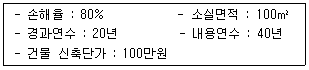
- 100000
- 300000
- 500000
- 700000
(정답률: 42%)
78. 화재조사 및 보고규정상 전부 손해의 경우 동물, 식물의 피해액 산정 기준은?
- 시중매매가격
- 수리비 및 치료비
- 전문가의 감정가격
- 감정서의 감정가액
(정답률: 75%)
79. 화재조사 및 보고규정상 소방서장이 관한 구역 내에서 발생한 화재에 대하여 작성하여야 할 화재조사서류가 아닌 것은?
- 질문기록서
- 재산회계 보고서
- 화재현장출동보고서
- 화재발생종합보고서
(정답률: 67%)
80. 화재조사 및 보고규정상 화재피해조사의 재산피해 범위가 아닌 것은?
- 화재진압 중 발생한 부상자
- 소화활동으로 발생한 수손피해
- 화재중 발생한 폭발 등에 의한 피해
- 열에 의한 탄화, 용융, 파손 등의 피해
(정답률: 46%)
5과목: 화재조사관계법규
81. 화재조사 및 보고규정상 긴급상황보고 및 조사결과보고와 관련된 설명 중 틀린 것은?
- 화재상황보고는 최초보고, 중간보고, 최종보고로 구분한다.
- 사망 3명이거나 재산피해액이 30억원 이상으로 추정되는 화재는 긴급상황보고를 하여야 한다.
- 대상이 특수하여 사회적 이목이 집중될 것으로 예상되는 화재는 긴급상황보고를 하여야 한다.
- 긴급상황보고 대상이 아닌 일반화재는 화재인지로부터 15일 이내에 조사결과를 소방본부장에게 보고하여야 한다.
(정답률: 55%)
82. 제조물 책임법령상 소멸시효에 관한 사항으로 ()에 알맞은 기준은?
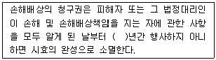
- 3
- 5
- 7
- 15
(정답률: 70%)
83. 화재로 인한 재해보상과 보험가입에 관한 법률상 특수건물의 범위에 해당하지 않는 것은?
- 사격 및 사격장 안전관리에 관한 법률에 따른 실내사격장으로 사용하는 건물
- 관광진흥법에 따른 관광숙박업으로 사용하는 건물로서 연면적의 합계가 2천제곱미터 이상인 건물
- 식품위생법 시행령에 따른 일반음식점영업으로 사용하는 부분의 바닥면적의 합계가 2천제곱미터 이상인 건물
- 영화 및 비디오물의 진흥에 관한 법률에 따른 영화상영관으로 사용하는 부분의 바닥면적의 합계가 2천제곱미터 이상인 건물
(정답률: 54%)
84. 화재로 인한 재해보상과 보험가입에 관한 법률상 특수건물의 소유자가 손해보험회사가 운영하는 특약부화재보험에 가입하지 않았을 때 벌칙기준은?
- 200만원 이하의 벌금
- 300만원 이하의 벌금
- 500만원 이하의 벌금
- 1000만원 이하의 벌금
(정답률: 73%)
85. 형법상 방화와 실화의 죄 중 현주건조물 등 방화로 분류되지 않는 것은?
- 사람이 현존하는 자동차에 대한 방화
- 건주물 등 내부에 사람이 현존하는 대상물에 대한 방화
- 우사 측면에 접해 있으며 사람이 주거로 사용하고 있는 가옥에 대한 방화
- 사람이 일상생활의 장소로 사용하지 않고 내부에 사람이 없는 컨테이너박스에 대한 방화
(정답률: 73%)
86. 소방기본법령상 소방활동에 필요한 사람 외의 사람이 소방활동구역을 출입하였을 때 부과되는 과태료 기준은?
- 100만원 이하의 과태료
- 300만원 이하의 과태료
- 200만원 이하의 과태료
- 500만원 이하의 과태료
(정답률: 50%)
87. 소방기본법령상 다음의 명령에 따르지 않거나 방해한 경우 벌금 기준은?
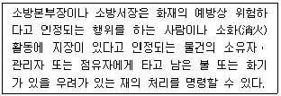
- 100만원 이하의 벌금
- 200만원 이하의 벌금
- 300만원 이하의 벌금
- 500만원 이하의 벌금
(정답률: 30%)
88. 소방기본법령상 화재의 조사에 관한 사항 중 틀린 것은?
- 소방청장, 소방본부장 또는 소방서장은 화재가 발생하였을 때에는 화재의 원인 및 피해 등에 대한 조사를 하여야 한다.
- 화재조사를 하는 관계 공무원은 그 권한을 표시하는 증표를 지니고 이를 관계인에게 보여 주어야 한다.
- 화재조사를 하는 관계 공무원은 관계인의 정당한 업무를 방해하거나 화재조사를 수행하면서 알게 된 비밀을 다른 사람에게 누설하여서는 아니 된다.
- 소방청장, 소방본부장 또는 소방서장은 수사기관이 방화 또는 실화의 혐의가 있어서 이미 피의자를 체포하였거나 증거물을 압수하였을 때에 화재조사를 위하여 필요한 경우에는 수사에 지장을 주지 아니하는 범위에서 그 피의자 또는 압수된 증거물에 대한 조사를 할 수 없다.
(정답률: 77%)
89. 화재로 인한 재해보상과 보험가입에 관한 법률 시행령상 특수건물의 소유자가 가입하여야 하는 보험의 보험금액 충족 기준으로 ()에 알맞은 내용은?
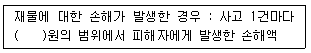
- 2천만
- 5천만
- 1억
- 10억
(정답률: 28%)
90. 화재조사 및 보고규정상 소방황동구역의 설정 및 현장보존에 관한 사항 중 틀린 것은?
- 소방활동구역의 관리는 수사기관과 상호 협조하여야 한다.
- 소방활동구역의 설정은 최대한의 범위로 한다.
- 소방본부장 또는 서장은 소화활동시 현장물건 등의 이동 또는 파괴를 최소화하여 원활한 화재조사활동이 이루어 질 수 있도록 현장보존에 노력하여야 한다.
- 소방활동구역의 표시는 로프 등으로 범위를 한정하고 경고판을 부착하며 출입을 통제하는 등 현장보존에 최대한 노력하여야 한다.
(정답률: 77%)
91. 민법상 다음의 경우 사용자 책임배상에 관한 사항 중 틀린 것은?
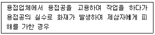
- 용접공 사용자에게 손해배상의 책임이 있다.
- 용접공 사용자에 갈음하여 용접공을 감독하는 자도 손해를 배상할 책임이 있다.
- 용접공 사용자가 피용자(용접공)에게 상당한 주의를 하였음에도 손해가 있는 경우에는 면책된다.
- 용접공 사용자 또는 감독자는 피용자(용접공)에 대하여 구상권을 행사할 수 없다.
(정답률: 30%)
92. 화재조사 및 보고규정상 화재유형에 관한 설명 중 틀린 것은?
- 선박ㆍ항공기화재는 선박, 항공기 또는 그 적재물이 소손된 것을 말한다.
- 건축ㆍ구조물 화재는 건축물, 구조물 또는 그 수용물이 소손된 것을 말한다.
- 임야화재는 산림, 야산, 들판의 수목, 경작물을 보관하는 창고가 소손된 것을 말한다.
- 자동차ㆍ철도차량 화재는 자동차, 철도차량 및 피견인 차량 또는 그 적재물이 소손된 것을 말한다.
(정답률: 73%)
93. 실화책임에 관한 법률의 내용 설명으로 옳은 것은?
- 실화자는 중대한 과실이 있는 경우에만 손해배상책임이 있다.
- 실화로 인한 연소(延燒) 부분 및 정신적 피해에 대한 손해배상청구를 포함한다.
- 법원은 손해배상액의 경감청구가 있을 경우 피해자의 경제 상태는 고려하지 아니한다.
- 법원은 손해배상액의 경감청구가 있을 경우 피해 확대의 원인을 고려할 수 있다.
(정답률: 40%)
94. 실화책임에 관한 법률상 손해배상의무자의 손해배상액 경감 청구가 있을 때 법원이 손해배상액을 경감할 수 있는 기준이 아닌 것은? (단, 실화가 중대한 과실로 인한 것이 아닌 경우이다.)
- 피해의 대상과 정도
- 화재의 원인과 규모
- 배상의무자의 경제상태
- 피해 확대를 방지하기 위한 피해자의 노력
(정답률: 30%)
95. 제조물책임법상 손해배상을 지는 자가 손해배상책임을 면하는 기준 중 틀린 것은?
- 제조업자가 해당 제조물을 공급하지 아니하였다는 사실을 입증한 경우
- 제조업자가 해당 제조물을 공급한 당시의 과학ㆍ기술수준으로는 결함의 존재를 발견할 수 없었다는 사실을 입증한 경우
- 제조물의 결함이 제조업자가 해당 제조물의 결함이 발생한 당시의 법령이 정하는 기준을 준수함으로써 발생한 사실을 입증한 경우
- 원재료나 부품의 경우에는 그 원재료나 부품을 사용한 제조물 제조업자의 설계 또는 제작에 관한 지시로 인하여 결함이 발생하였다는 사실을 입증한 경우
(정답률: 42%)
96. 국가배상법상 화재조사관이 직무를 집행하면서 과실로 법령을 위반하여 타인에게 손해를 입힐 경우 손해배상의 책임자는?
- 소방서장
- 화재조사관
- 소방재난본부장
- 국가나 지방자치단체
(정답률: 28%)
97. 소방기본법령상 화재조사의 종류 및 조사의 범위 중 화재피해조사의 조사 범위에 포함되지 않는 것은?
- 소화활동 중 사용된 물로 인한 피해
- 소화활동으로 발생한 영업 손실 피해
- 소화활동 중 발생한 사망자 및 부상자
- 연기, 물품반출, 화재로 인한 폭발 등에 의한 피해
(정답률: 64%)
98. 화재증거물수집관리규칙상 증거물 수집에 관한 설명 중 틀린 것은?
- 증거물을 수집할 때는 휘발성이 낮은 것에서 높은 순서로 진행해야 한다.
- 증거물의 소손 또는 소실 정도가 심하여 증거물의 일부분 또는 전체가 유실될 우려가 있는 경우는 증거물을 밀봉하여야 한다.
- 증거물이 파손된 우려가 있는 경우에 충격금지 및 취급방법에 대한 주의사항을 증거물의 포장 외측에 적절하게 표기하여야 한다.
- 증거물 수집 과정에서는 증거물의 수집자, 수집 일자, 상황 등에 대하여 기록을 남겨야 하며, 기록은 가능한 법과학자용 표지 또는 태그를 사용하는 것을 원칙으로 한다.
(정답률: 64%)
99. 화재조사 및 보고규정상 자산에 대한 최종 잔가율을 20%로 정하는 자산을 모두 고른 것은?
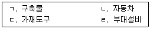
- ㄱ, ㄴ, ㄷ
- ㄱ, ㄴ, ㄹ
- ㄱ, ㄷ, ㄹ
- ㄴ, ㄷ, ㄹ
(정답률: 59%)
100. 형법상 공용건조물 등 방화에 관한 사항으로 ()에 알맞은 기준은?
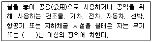
- 1
- 3
- 5
- 7
(정답률: 31%)